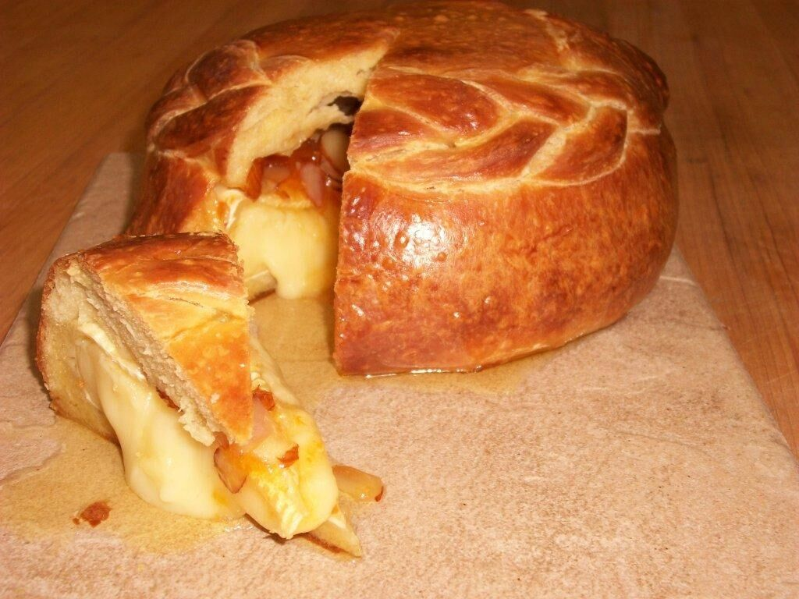

Brie En Brioche

Description
This classic appetizer is not only delicious; it also makes a lovely centerpiece
for a cheese board. Use scraps from the dough to make small decorations for the
top and sides.
Ingredients
- 1/2 cup warm milk(105°F-110°F)
- 2 3/4 cups sugar, divided
- 1 3/4 teaspoons (1 envelope) active dry yeast
- 4 large eggs, divided
- 3/4 cup unsalted butter, softened
- 1 teaspoon plus 1 pinch kosher salt, divided
- 4-6 cups bread flour
- 1 (2-pound) wheel Brie cheese
- 1 tablespoon water
Steps
-
In a large bowl, combine milk, 1 cup sugar,
and yeast. Stir to dissolve and let stand until
foamy, about 10 minutes.
-
Add 3 eggs, butter, remaining 1 3/4 cups sugar,
and 1 teaspoon salt: stir to combine. Add enough
bread flour to create a firm dough. Turn dough
out onto a floured work surface and knead, adding
more flour only as necessary to avoid stickiness,
until dough becomes smooth and elastic, 8-10 minutes.
Return dough to bowl, dust the top lightly with flour,
and cover with a damp cloth or plastic wrap. Let rise
at room temperature until doubled in volume, 2-3 hours.
Punch dough down, fold in half, and let rise again until
doubled, about 45 minutes.
-
Preheat oven to 425°F. Line a baking sheet with parchment paper.
-
Turn risen dough onto floured surface and with a rolling
pin, roll out into a circle 3"-4" wider than the wheel of
Brie. Place Brie into center of circle, and fold edges over
to completely conceal cheese. Place on prepared baking sheet
seam-side down.
-
In a small bowl, whisk together remaining egg and pinch salt
with water. Brush mixture across surface of dough. Bake 15
minutes, then reduce heat to 375°F and continue baking
until puffed and golden, 30-35 minutes. Remove to a rack and
cool down 10 minutes before serving.